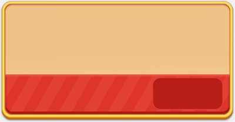

Ảnh chụp màn hình
Gói cứu bàn chào đúng lúc người chơi sắp thua hoặc vừa thua.
Mô tả
- Hai gói bán theo tình huống khó: Prefail Offer chào trước khi thua để tặng thêm thời gian và vật phẩm lật ngược màn; Fail Offer chào sau khi thua để hồi sinh.
- Cả hai dùng gói nhiều bậc: càng gặp khó nhiều lần thì gói càng mạnh, và sẽ hạ bậc nếu người chơi liên tục bỏ qua.
- Fail Offer còn có cơ chế đổi sang gói 'Best Value' có hạn 24 giờ sau khi gói thường hiện đủ 10 lần.
- Nội dung thưởng và số giây hồi sinh lấy từ server qua FailOfferSheet / PrefailOfferSheet.
Thiết kế chi tiết
Tóm tắt thiết kế
Code Mở màn 10. Prefail “Gói hỗ trợ của Sparky” 5 bậc leo thang theo số lần gặp khó; Fail Offer 2 gói hồi sinh; sau 10 lần hiện thì đổi sang gói Best Value 24 giờ.
Luồng người chơi từng bước
- Hình ảnhGiao diện APKKhông chạy trên tài khoản thử ngày 28/10; minh hoạ bằng sprite trong APK.

Sprite Fail Offer

Bảng tổng hợp mọi tính năng đã làm chi tiết: GoodsSort_ThietKeChiTiet.xlsx.
Còn thiếu / chưa xác minh
Mở khóa & điểm vào
Cả hai mở ở màn 10: RemoteConfig.levelUnlockFailOffer = 10 (FailOfferDataController.get_LevelUnlock) và levelUnlockPrefailOffer = 10 (PrefailOfferDataController.get_LevelUnlock, điều kiện IsUnlock dùng levelUnlockPrefailOffer < level).
Điểm vào:
- Prefail: màn hình cảnh báo sắp thua trong khi chơi (CanShow, GetReviveExtraTimeSeconds)
- Fail: màn hình thua / revive (FailOfferDataController.OnReviveSceneShow, RecordReviveImpression)
- Kiểm tra sau mỗi màn (OnCompleteLevel)
Cách hoạt động
- Prefail: EnsureInitialized/GetFirstPackNo đặt gói khởi điểm; SetPack leo bậc 0..4; ApplyDowngradeIfNeeded hạ bậc theo ngưỡng 3 và 5; GetReviveExtraTimeSeconds cấp thêm giây.
- Fail: OnReviveSceneShow dựng gói revive, RecordReviveImpression đếm lần hiện; sau 10 lần gói thường, SwitchToBestValue bật gói tốt nhất kéo dài 24 giờ (CheckBestValueExpired đưa về mặc định khi hết giờ).
- GetRewards / GetProduct / GetPrice lấy nội dung và giá; mua xong PurchaseComplete cộng thưởng và Save.
- OnAnyIapPurchased tránh chào chồng khi vừa mua gói khác; UpdateDataFromServer đồng bộ đa thiết bị.
Luồng chi tiết theo code
Fail Offer: FailOfferData giữ defaultShowCount, bestValueEndTime, purchasedLevel. Khi vào màn revive, OnReviveSceneShow / get_CurrentPack chọn gói đang chào. Gói mặc định hiển thị cho đến khi số lần hiện đạt failOfferShowDefaultToBestValue (10) thì SwitchToBestValue bật gói 'giá trị nhất' kéo dài failOfferBestValueCountdownHours (24 giờ); CheckBestValueExpired đưa về gói mặc định khi hết giờ. GetRewards / GetProduct / GetPrice lấy thưởng và giá; mua xong PurchaseComplete ghi purchasedLevel, SwitchToDefault và Save. Prefail Offer: PrefailOfferData giữ currentPack, showCount, reachedTier3OrBlocked, purchasedLevel. EnsureInitialized / GetFirstPackNo đặt gói khởi điểm; mỗi lần chào tăng showCount; SetPack leo bậc trong khoảng MinPackNo (0) .. MaxPackNo (4); ApplyDowngradeIfNeeded hạ bậc nếu người chơi bỏ qua (ngưỡng DownThresholdPack2 = 3, DownThresholdPack3Plus = 5); MarkReachedTier3IfNeeded ghi đã chạm bậc cao. GetReviveExtraTimeSeconds cấp thêm giây để chơi tiếp. Hành vi còn đổi theo RemoteConfig.prefailOfferScenario (0/1). Cả hai nghe OnAnyIapPurchased để không chào khi vừa mua gói khác, và UpdateDataFromServer để đồng bộ.
Ảnh chụp màn hình (1)
. Bấm ảnh để phóng to; nhãn UC dẫn tới use case tương ứng.
Phần thưởng
Phần thưởng theo code
| Ngữ cảnh | Phần thưởng | Evidence |
|---|---|---|
| Mỗi bậc gói Fail / Prefail | Vật phẩm cứu màn (thời gian búa swap...) theo reward[]/value[] — giá trị do server | FailOfferDataController.GetRewards; PrefailOfferDataController.GetRewards |
Số liệu chính
| Chỉ số | Giá trị | Nguồn |
|---|---|---|
| 10 / 10 | | |
| 10 | | |
| 24 | | |
| 0 / 4 | | |
| 3 / 5 | |
Use case (6)
Bấm vào từng use case để mở. Mở/đóng tất cả
UC-01 Chào gói Prefail trước khi người chơi thua
Các bước- EnsureInitialized + GetFirstPackNo xác định gói khởi điểm
- get_CurrentPackNo trả gói hiện tại (0..4)
- GetRewards(packNo) + GetReviveExtraTimeSeconds lấy thưởng và thời gian cứu
| Actor | System |
|---|---|
| Trigger | Sắp hết giờ / sắp thua trong màn |
| Điều kiện | Level > levelUnlockPrefailOffer (10), CanShow() đúng |
| Kết quả | Người chơi được chào gói tặng thời gian + vật phẩm để lật ngược màn |
| Quy tắc / số liệu | MinPackNo = 0, MaxPackNo = 4 (5 gói gs_pre_fail_offer_1..5); hành vi theo prefailOfferScenario |
| Evidence | PrefailOfferDataController.CanShow; get_CurrentPackNo; GetReviveExtraTimeSeconds; get_Scenario |
UC-02 Leo bậc / hạ bậc gói Prefail theo lần gặp khó
Các bước- OnCompleteLevel / OnOfferDismissed cập nhật trạng thái
- SetPack(packNo) leo bậc khi người chơi tiếp tục khó
- ApplyDowngradeIfNeeded hạ bậc theo ngưỡng DownThresholdPack2 (3) / DownThresholdPack3Plus (5)
- MarkReachedTier3IfNeeded ghi đã chạm bậc 3+
| Actor | System |
|---|---|
| Trigger | Qua màn hoặc bỏ qua gói |
| Điều kiện | Prefail đang hoạt động |
| Kết quả | Gói co giãn độ mạnh theo mức khó người chơi gặp phải |
| Quy tắc / số liệu | reachedTier3OrBlocked khóa không cho tụt dưới một mức khi đã lên bậc cao |
| Evidence | PrefailOfferDataController.SetPack; ApplyDowngradeIfNeeded; GetFloorPackNo; MarkReachedTier3IfNeeded |
UC-03 Chào gói Fail Offer sau khi thua để hồi sinh
Các bước- OnReviveSceneShow khởi tạo gói revive
- RecordReviveImpression đếm số lần hiển thị
- get_CurrentPack + GetRewards + GetGoldValue lấy nội dung và giá
| Actor | System |
|---|---|
| Trigger | Thua màn, vào scene revive |
| Điều kiện | Level >= levelUnlockFailOffer (10), IsUnlock + CanShow đúng |
| Kết quả | Popup hồi sinh với gói vật phẩm cứu màn |
| Quy tắc / số liệu | Sản phẩm gs_fail_offer_1, gs_fail_offer_2 |
| Evidence | FailOfferDataController.OnReviveSceneShow; RecordReviveImpression; get_CurrentPack; GetRewards |
UC-04 Đổi sang gói 'Best Value' sau nhiều lần hiển thị
Các bước- get_ShowDefaultToBestValue đọc failOfferShowDefaultToBestValue (10)
- SwitchToBestValue bật gói giá trị nhất, đặt bestValueEndTime
- get_BestValueCountdownHours đọc failOfferBestValueCountdownHours (24) cho đồng hồ
- CheckBestValueExpired đưa về gói mặc định khi hết giờ
| Actor | System |
|---|---|
| Trigger | defaultShowCount đạt ngưỡng |
| Điều kiện | Gói mặc định đã hiện đủ số lần |
| Kết quả | Người chơi thấy gói 'tốt nhất' có hạn 24 giờ sau khi đã bỏ qua gói thường 10 lần |
| Quy tắc / số liệu | failOfferShowDefaultToBestValue = 10; failOfferBestValueCountdownHours = 24 |
| Evidence | FailOfferDataController.SwitchToBestValue; CheckBestValueExpired; get_ShowDefaultToBestValue; get_BestValueCountdownHours |
UC-05 Mua gói và nhận thưởng cứu màn
Các bước- Purchase(pack/packNo, failType, callback) chạy IAP
- PurchaseComplete cộng thưởng (ResourceConstants.GetBUY_IAP), ghi purchasedLevel
- Fail: SwitchToDefault; Prefail: SetPack cập nhật; Save
| Actor | Player |
|---|---|
| Trigger | Bấm mua trên popup Fail/Prefail |
| Điều kiện | Gói còn hiệu lực |
| Kết quả | Người chơi nhận vật phẩm, tiếp tục chơi / hồi sinh |
| Quy tắc / số liệu | onPurchaseSuccess báo cho UI; không chào lại cùng màn |
| Evidence | FailOfferDataController.PurchaseComplete; PrefailOfferDataController.PurchaseComplete; SwitchToDefault; SetPack |
UC-06 Không chào khi vừa mua gói khác / đồng bộ server
Các bước- OnAnyIapPurchased kiểm tra sản phẩm (IsPrefailProduct) để tránh chồng chào
- UpdateDataFromServer ghi đè dữ liệu gói
- Save qua SaveLoadHandler
| Actor | System |
|---|---|
| Trigger | Có giao dịch IAP khác hoặc nhận dữ liệu server |
| Điều kiện | - |
| Kết quả | Tránh chào trùng; trạng thái đồng nhất đa thiết bị |
| Quy tắc / số liệu | Dữ liệu lưu key 'fail_offer' / 'prefail_offer' |
| Evidence | FailOfferDataController.OnAnyIapPurchased; PrefailOfferDataController.IsPrefailProduct; UpdateDataFromServer |
Cấu hình (11)
Gộp mọi nguồn: const trong code, JSON mặc định trong Resources, bảng static, storage key, AB test, cờ server.
| Nguồn | Key | Kiểu | Giá trị | Ý nghĩa | Nơi định nghĩa |
|---|---|---|---|---|---|
| server info | levelUnlockFailOffer | int | 10 | Màn mở Fail Offer | RemoteConfig; FailOfferDataController.get_LevelUnlock |
| server info | levelUnlockPrefailOffer | int | 10 | Màn mở Prefail Offer (IsUnlock dùng < level) | RemoteConfig; PrefailOfferDataController.get_LevelUnlock |
| server info | failOfferShowDefaultToBestValue | int | 10 | Số lần hiện gói mặc định trước khi chuyển sang gói Best Value | RemoteConfig; FailOfferDataController.get_ShowDefaultToBestValue |
| server info | failOfferBestValueCountdownHours | int | 24 | Số giờ gói Best Value còn hiệu lực | RemoteConfig; FailOfferDataController.get_BestValueCountdownHours |
| server info | prefailOfferScenario | int | do server (0 hoặc 1) | Kịch bản hành vi của Prefail Offer | RemoteConfig; PrefailOfferDataController.get_Scenario |
| code const | MinPackNo / MaxPackNo | int | 0 / 4 | Khoảng bậc gói Prefail (5 gói) | PrefailOfferDataController |
| code const | DownThresholdPack2 / DownThresholdPack3Plus | int | 3 / 5 | Ngưỡng hạ bậc gói Prefail | PrefailOfferDataController |
| config class | FailOfferData | class | defaultShowCount:int, bestValueEndTime:long, purchasedLevel:int | Trạng thái Fail Offer | FailOfferData |
| config class | PrefailOfferData | class | currentPack:int, showCount:int, reachedTier3OrBlocked:bool, purchasedLevel:int | Trạng thái Prefail Offer | PrefailOfferData |
| server info | FailOfferSheet / PrefailOfferSheet | sheet | id:int, reward[]:EncryptedInt, value[]:EncryptedInt — giá trị do server | Nội dung thưởng của từng bậc gói | FailOfferSheet.Get; PrefailOfferSheet.Get; nạp qua ClientClassConverter |
| code const | IAP product ids | string | gs_fail_offer_1, gs_fail_offer_2, gs_pre_fail_offer_1..5 | Mã sản phẩm IAP các bậc gói | FailOfferDataController (.cctor); PrefailOfferDataController (.cctor) |
Backend / server
| Command | Chiều | Mục đích |
|---|---|---|
get-config (Sheet) qua ClientClassConverter | server->client | nạp FailOfferSheet / PrefailOfferSheet |
UpdateDataFromServer(FailOfferData / PrefailOfferData) | server->client | đồng bộ trạng thái gói |
Giao diện (UI)
| Element | Class | Mục đích |
|---|---|---|
| Popup Prefail 'Sparky's Supply' | UIPrefailOfferValuePackPanelHelper | chào gói cứu màn trước khi thua, hiện thời gian tặng thêm |
Analytics (1)
| Event | Tham số | Khi nào |
|---|---|---|
revive impression | fail_offer | FailOfferDataController.RecordReviveImpression khi hiện popup revive |
Storage keys
fail_offer prefail_offer
Chưa đọc được / ghi chú
- Nội dung thưởng và giây hồi sinh từng bậc (FailOfferSheet / PrefailOfferSheet) do server cấu hình.
- prefailOfferScenario do server điều chỉnh.
- FailSafe (levelApplyFailSafe_1 = 30, FailSafeSheet: level, failToActives[]) là cơ chế tự giảm độ khó sau nhiều lần thua, bổ trợ cho Fail/Prefail Offer.
Tính năng liên quan
Mạng / Tim (Lives) Booster (Hammer/Time/x2Star) Power-up trong màn (Hammer/Freeze/Wand/Swap) Early Offer (Ưu đãi sớm) FailSafe
Nguồn đã đọc
- features/FailOfferDataController.md
- features/PrefailOfferDataController.md
- features/FailOfferSheet.md
- features/PrefailOfferSheet.md
- features/FailSafeSheet.md
- PseudoC/Assembly-CSharp/FailOfferDataController.c
- PseudoC/Assembly-CSharp/PrefailOfferDataController.c
- facts/config/remoteconfig_defaults.tsv